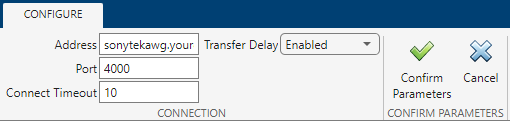

Troubleshooting TCP/IP Client Interface
Transmission Control Protocol (TCP) is a transport protocol layered on top of the Internet Protocol (IP) and is one of the most highly used networking protocols. You can use network socket communication to connect to remote hosts to read and write data.
Issue
If you are having trouble connecting to or communicating with your remote host, try these troubleshooting tips. All of these steps also apply for troubleshooting the TCP/IP Explorer app.
Possible Solutions
Supported Platforms
TCP/IP is supported on these platforms:
Linux®
macOS
Windows® 10 and later
The TCP/IP client interface is supported on the same platforms as MATLAB®. For updates to the list of currently supported platforms, see System Requirements.
Configuration and Connection
Make sure you can create your TCP/IP client object. You create a client object with the
tcpclientfunction, which requires the name of the remote host as an input argument. You also need to specify the remote port value.Each client object is associated with one instrument. For example, to create a client object for a Sony/Tektronix® AWG520 Arbitrary Waveform Generator, you use the remote host name of the instrument and the port number, which can be found in the instrument documentation.
t = tcpclient("sonytekawg.yourdomain.com",4000);If you are using the TCP/IP Explorer app, you specify the remote host name or address and port number after clicking Configure TCP/IP Connection. Click Confirm Parameters to create a TCP/IP client connected to the specified TCP/IP server.

After you connect to the device, you can communicate with it. If sending and receiving does not work, you can check the following:
Make sure the data is being sent in the format expected by the server.
If you connect to a web server, you might need to send HTTP
getorpostcommands. You can also use theurlreadorwebreadfunctions to communicate with web servers.Many TCP/IP servers expect header information inside the TCP/IP packet.
See Write and Read Data over TCP/IP Interface for an example of communication over TCP/IP.
VISA-TCP/IP Communication
You can also use the visadev interface or VISA
Explorer app with a VISA-TCP/IP resource name instead of the
tcpclient interface or TCP/IP Explorer app for
TCP/IP communication with instruments.
Note
You must have Instrument Control Toolbox™ installed to use visadev or VISA
Explorer.
Incorrect Data Type
Make sure the correct data type—for example int16,
uint16, double—is being used with
read and write. Use the same data type as
the instrument. If reading and writing data types other than
uint8 or int8, make sure the
ByteOrder is correct.